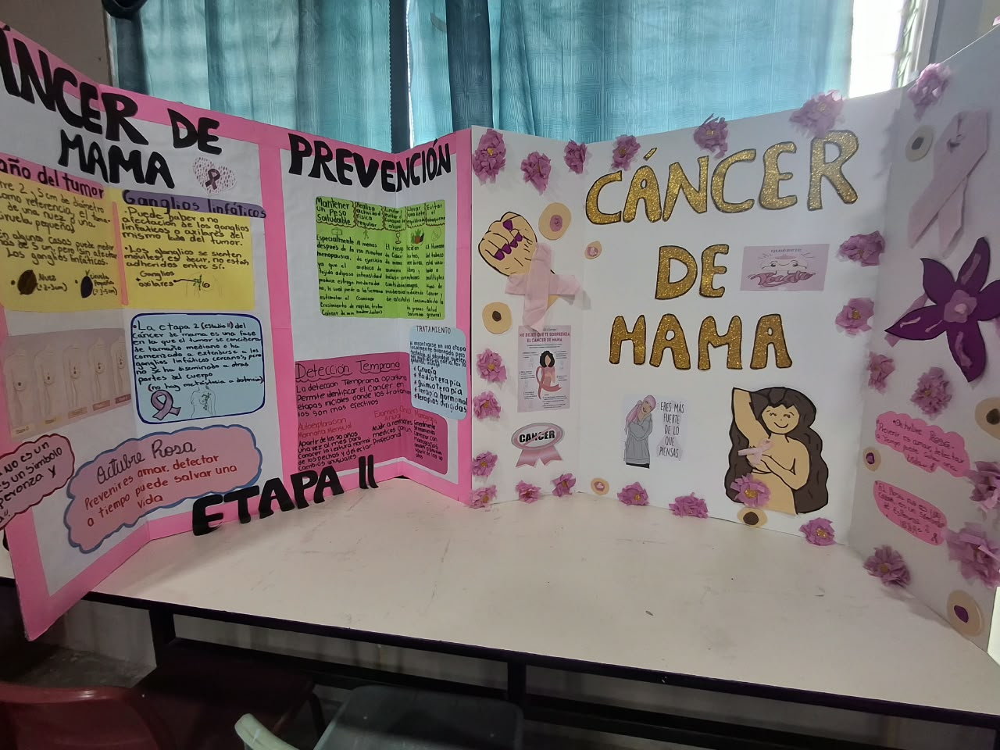
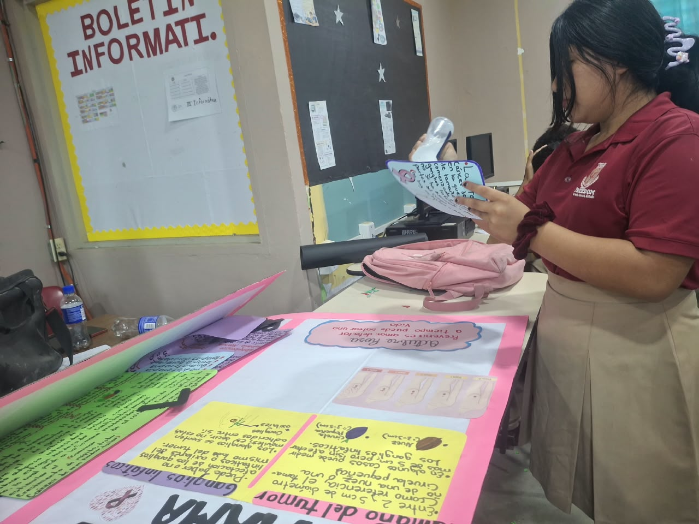

¿Qué es el cáncer de mama?
Es una enfermedad en la que células del tejido de la mama crecen sin control y forman un tumor. Puede afectar sobre todo a mujeres, aunque también puede aparecer en hombres.
Cuando se descubre en una etapa temprana, el tratamiento tiene muchas más posibilidades de funcionar. Por eso conocer tu cuerpo y hacerte chequeos es tan importante.
El rosa no es un color: es un símbolo de esperanza y vida.
Etapas: el tamaño del tumor importa
Los médicos clasifican el cáncer en etapas según el tamaño del tumor y si se ha extendido a los ganglios linfáticos (pequeñas glándulas que forman parte de las defensas del cuerpo).
Como un frijol o una nuez
Entre 2 y 5 cm de diámetro, como referencia, el tamaño de una nuez o una ciruela pequeña.
Mayor de 5 cm
En algunos casos el tumor puede medir más de 5 cm.
Ganglios linfáticos
Pueden estar afectados los ganglios de la axila (axilares) o los cercanos al mismo lado del tumor.
Etapa II
En la etapa 2 el tumor se considera más grande o ya comenzó a extenderse a los ganglios linfáticos cercanos, pero todavía no se ha propagado a otras partes lejanas del cuerpo (no hay metástasis).
Prevención
No existe una forma de evitarlo al 100 %, pero estos hábitos reducen el riesgo:
Mantener un peso saludable
Sobre todo después de la menopausia, porque el tejido graso produce más estrógeno, una hormona que puede estimular algunos cánceres.
Hacer actividad física
Al menos 150 minutos de ejercicio de intensidad moderada por semana.
Limitar el alcohol
Mientras menos alcohol, menor riesgo. Lo ideal es evitarlo o consumirlo muy poco.
Evitar el tabaco
Fumar se relaciona con varios tipos de cáncer, incluido el de mama.
Detección temprana
Detectar el cáncer en etapas iniciales permite que los tratamientos sean más efectivos y menos agresivos.
- Autoexploración mensual
- Examen clínico
- Mamografía
Se recomienda empezar a hacerse mamografías alrededor de los 40 años, o antes si un médico lo indica por antecedentes familiares.
Cómo hacer la autoexploración
- Párate frente al espejo y observa tus mamas: forma, tamaño, color de la piel y pezones.
- Levanta los brazos y busca cambios, hundimientos o bultos visibles.
- Con las yemas de los dedos, palpa toda la mama y la axila con movimientos circulares.
- Repite acostada. Hazlo una vez al mes, unos días después de la menstruación.
- Si notas un bulto, secreción o cambio extraño, acude al médico. No es motivo para asustarse, pero sí para revisarse.
Tratamiento
El tratamiento lo decide un equipo médico según la etapa y el tipo de cáncer. Estas son las opciones más comunes, que a veces se combinan:
Cirugía
Retira el tumor o parte del tejido afectado.
Radioterapia
Usa radiación dirigida para destruir células cancerosas.
Quimioterapia
Medicamentos que eliminan o frenan las células cancerosas.
Terapia hormonal y dirigida
Bloquean las hormonas o los mecanismos que ayudan al tumor a crecer.
Videos
Nuestro trabajo en clase
Así preparamos y presentamos el proyecto sobre el cáncer de mama en el colegio. Toca una foto para verla grande.


